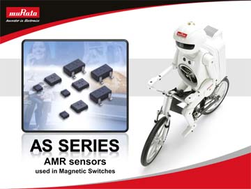

| |
 |
|
In the past, mechanical switches have been used for
open/close detection for various devices; however magnetic switches
and magnetic field sensors have since been gaining popularity.
Magnetic switches are primarily used for open/close detection in
home appliances such as white goods and security equipment as well
as other consumer electronics devices like mobile phones, laptop PCs
and digital cameras. They are also ideal for flow meters or pulse
encoders for the detection of rotation.
This audio presentation will discuss Murata’s AS Series AMR
sensors used in Magnetic Switches. AMR sensors are non-contact
magnetic sensors of high sensitivity for use in a relatively low
magnetic field and are ideal for a broad range of electronics
devices.
|
|